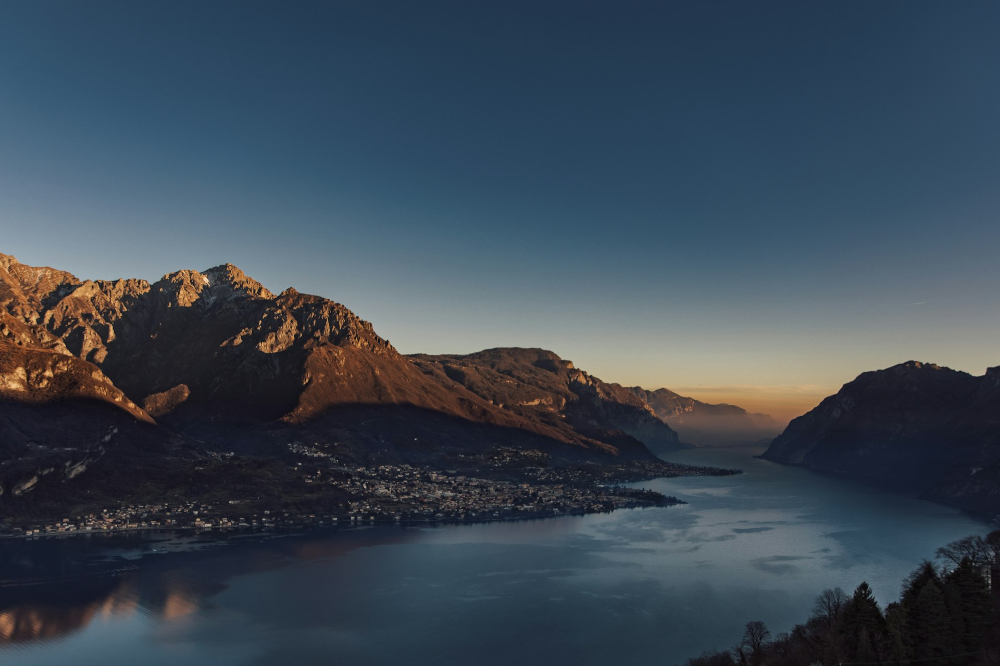

The mountains
Chasing
mountain light.
Cold air, still water, and a skyline that makes everything else feel small. An invitation to linger by the lake.
Find your slower pace ↗A LITTLE ALTITUDE. A NEW PERSPECTIVE.
A journal for the wandering spirit
Less rushing. More looking around.
Little stories from the
places in between.
01 / Places to get lost in
Follow the water. Find a quiet trail.
See where a little
curiosity takes you.
02 / Notes from the road
A few things to take with you.
None of them need much room.
One less stop on the itinerary. One more chance to find something unexpected.
Make space for what matters: a notebook, a favorite layer, and a little possibility.
The shifting light. A leaf in the wind. You don’t have to go far to see something new.
03 / A moment, held still
A breeze through the flowers. A few seconds with no destination. Press play, take a breath, and let the small things fill the frame.
A QUIET STUDY OF FLOWERS IN MOTION